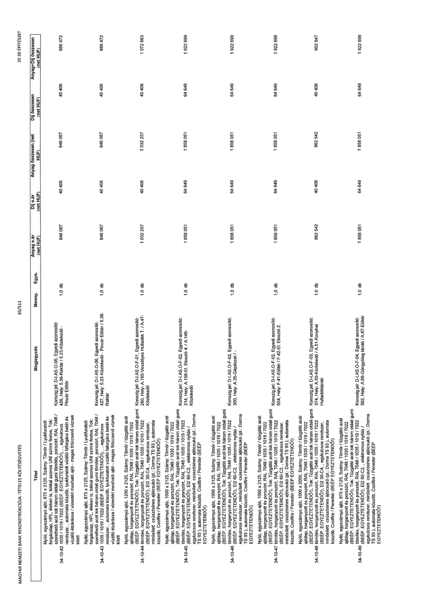

| Tétel | Megjegyzés | Menny. | Egys. | Anyag e.ár (net HUF) | Díj e.ár (net HUF) | Anyag összesen (net HUF) | Díj összesen (net HUF) | Anyag+Díj összesen (net HUF) |
|---|---|---|---|---|---|---|---|---|
| 34-10-42 Nyíló, egyszárnyú ajtó, 875 x 2125, Szárny: Tömör / Lyukfurtolt forgácslap, HPL éléken is, tokkal azonos UNI színre festve, Tok: szerelhető acél tok három oldali gumi tömítés, porszórt, RAL 7048 / 1035 / 1019 / 7022 (BÉÉP. EGYEZTETENDŐ!), , egykulcsos rendszer, , automata küszöb, lyukfuratolt vízálló faforgács betét és vízálló elzárássa / vizesvári mosható ajtó - magas fröccsenő víznek kitett | Konszign.jel: D-I.AS.O-06. Egyedi azonosító: 426, Hely: 5.39-Raktár / 5.23-Közlekedő - Pincét Előtér | 1,0 | db | 846 067 | 40 406 | 846 067 | 40 406 | 886 472 |
| 34-10-43 Nyíló, egyszárnyú ajtó, 875 x 2125, Szárny: Tömör / Lyukfurtolt forgácslap, HPL éléken is, tokkal azonos UNI színre festve, Tok: szerelhető acél tok három oldali gumi tömítés, porszórt, RAL 7048 / 1035 / 1019 / 7022 (BÉÉP. EGYEZTETENDŐ!), , egykulcsos rendszer, , automata küszöb, lyukfuratolt vízálló faforgács betét és vízálló elzárássa / vizesvári mosható ajtó - magas fröccsenő víznek kitett | Konszign.jel: D-I.AS.O-06. Egyedi azonosító: 427, Hely: 5.23-Közlekedő - Pincét Előtér / 5.38- Raktár | 1,0 | db | 846 067 | 40 406 | 846 067 | 40 406 | 886 472 |
| 34-10-44 Nyíló, egyszárnyú ajtó, 1250 x 2125, Szárny: Tömör / tűzgátló acél ajtólap, horganyzott és porszórt, RAL 7048 / 1035 / 1019 / 7022 (BÉÉP. EGYEZTETENDŐ!), Tok: Tűzgátló acél tok három oldali gumi tömítés, horganyzott és porszórt, RAL 7048 / 1035 / 1019 / 7022 (BÉÉP. EGYEZTETENDŐ!), EI2 30-C4,, egykulcsos rendszer, minősített csúszósínes ajtócsukó (pl.: Dorma TS 93), automata küszöb, / Peneder (BÉÉP. EGYEZTETENDŐ!) | Konszign.jel: D-I.AS.O-F-01. Egyedi azonosító: 280, Hely: A.165-Veszélyes Hulladék T. / A.47- Közlekedő | 1,0 | db | 1 032 257 | 40 406 | 1 032 257 | 40 406 | 1 072 663 |
| 34-10-45 Nyíló, egyszárnyú ajtó, 1000 x 2125, Szárny: Tömör / tűzgátló acél ajtólap, horganyzott és porszórt, RAL 7048 / 1035 / 1019 / 7022 (BÉÉP. EGYEZTETENDŐ!), Tok: Tűzgátló acél tok három oldali gumi tömítés, horganyzott és porszórt, RAL 7048 / 1035 / 1019 / 7022 (BÉÉP. EGYEZTETENDŐ!), EI2 60-C2,, elektromos nyitás / egykulcsos rendszer, minősített csúszósínes ajtócsukó (pl.: Dorma TS 93), automata küszöb, Coolfire / Peneder (BÉÉP. EGYEZTETENDŐ!) | Konszign.jel: D-I.AS.O-F-02. Egyedi azonosító: 214, Hely: A.158-El. Elosztó 4. / A.148- Közlekedő | 1,0 | db | 1 858 051 | 64 649 | 1 858 051 | 64 649 | 1 922 699 |
| 34-10-46 Nyíló, egyszárnyú ajtó, 1000 x 2125, Szárny: Tömör / tűzgátló acél ajtólap, horganyzott és porszórt, RAL 7048 / 1035 / 1019 / 7022 (BÉÉP. EGYEZTETENDŐ!), Tok: Tűzgátló acél tok három oldali gumi tömítés, horganyzott és porszórt, RAL 7048 / 1035 / 1019 / 7022 (BÉÉP. EGYEZTETENDŐ!), EI2 60-C2,, elektromos nyitás / egykulcsos rendszer, minősített csúszósínes ajtócsukó (pl.: Dorma TS 93), automata küszöb, Coolfire / Peneder (BÉÉP. EGYEZTETENDŐ!) | Konszign.jel: D-I.AS.O-F-02. Egyedi azonosító: 300, Hely: A.35-Gépészet / - | 1,0 | db | 1 858 051 | 64 649 | 1 858 051 | 64 649 | 1 922 699 |
| 34-10-47 Nyíló, egyszárnyú ajtó, 1000 x 2125, Szárny: Tömör / tűzgátló acél ajtólap, horganyzott és porszórt, RAL 7048 / 1035 / 1019 / 7022 (BÉÉP. EGYEZTETENDŐ!), Tok: Tűzgátló acél tok három oldali gumi tömítés, horganyzott és porszórt, RAL 7048 / 1035 / 1019 / 7022 (BÉÉP. EGYEZTETENDŐ!), EI2 60-C2,, egykulcsos rendszer, minősített csúszósínes ajtócsukó (pl.: Dorma TS 93), automata küszöb, Coolfire / Peneder (BÉÉP. EGYEZTETENDŐ!) | Konszign.jel: D-I.AS.O-F-02. Egyedi azonosító: 924, Hely: F.41-Előtér / F.42-El. Elosztó 2. | 1,0 | db | 1 858 051 | 64 649 | 1 858 051 | 64 649 | 1 922 699 |
| 34-10-48 Nyíló, egyszárnyú ajtó, 1000 x 2000, Szárny: Tömör / tűzgátló acél ajtólap, horganyzott és porszórt, RAL 7048 / 1035 / 1019 / 7022 (BÉÉP. EGYEZTETENDŐ!), Tok: Tűzgátló acél tok három oldali gumi tömítés, horganyzott és porszórt, RAL 7048 / 1035 / 1019 / 7022 (BÉÉP. EGYEZTETENDŐ!), EI2 30-C4,, egykulcsos rendszer, minősített csúszósínes ajtócsukó (pl.: Dorma TS 93), automata küszöb, Coolfire / Peneder (BÉÉP. EGYEZTETENDŐ!) | Konszign.jel: D-I.AS.O-F-03. Egyedi azonosító: 374, Hely: A.50-Közlekedő / A.51-Konyhai Hulladéktároló | 1,0 | db | 862 542 | 40 406 | 862 542 | 40 406 | 902 947 |
| 34-10-49 Nyíló, egyszárnyú ajtó, 875 x 2125, Szárny: Tömör / tűzgátló acél ajtólap, horganyzott és porszórt, RAL 7048 / 1035 / 1019 / 7022 (BÉÉP. EGYEZTETENDŐ!), Tok: Tűzgátló acél tok három oldali gumi tömítés, horganyzott és porszórt, RAL 7048 / 1035 / 1019 / 7022 (BÉÉP. EGYEZTETENDŐ!), EI2 60-C2,, elektromos nyitás / egykulcsos rendszer, minősített csúszósínes ajtócsukó (pl.: Dorma TS 93 ), automata küszöb, Coolfire / Peneder (BÉÉP. EGYEZTETENDŐ!) | Konszign.jel: D-I.AS.O-F-04. Egyedi azonosító: 582, Hely: A.69-Göngyöleg tároló / A.67- Előtér | 1,0 | db | 1 858 051 | 64 649 | 1 858 051 | 64 649 | 1 922 699 |
